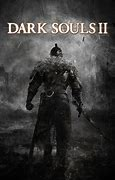

(щоб прейти на сайт назміть на картинки або на назву гри. Щоб повернутися нажміть НАЗАД)
DARK SOULS

Рік випустку:2011
У всесвіті гри у його початку хм правели безсмерті дракони але троє великих: Гвин-повелитель света , Нито-повелитель мертвих , Ведьма Изалита-повелительница вогню чиє їм'я забуто на віка та хитрий пегемей якого так легко забути, отримавший темну душу почавши рід людський. За допомогою першого народженого дракона Сита вони вбили древних драконів й так почалася Єра вогню, Сит получив титул герцога та велик замок навкол кристального гроту.
У всесвіті гри у його початку хм правели безсмерті дракони але троє великих: Гвин-повелитель света , Нито-повелитель мертвих , Ведьма Изалита-повелительница вогню чиє їм'я забуто на віка та хитрий пегемей якого так легко забути, отримавший темну душу почавши рід людський.
DARK SOULS 2
Рік випустку:2014
Ця частина серії проходить у зовсім іншому місці та неяк незвязанна з іншими частиними серії. тут розповідається про чотири королівства у які прийшла королева яка є частиною души мануса того самого пегімея корони яких могли позбавити опустошенія їм'я цих королів ми не знаємо, але знаємо їм'я одного з них а семе Вендрика короля землі Лордранна а інші королі називають: Топлий король його вбив дракон, Король слоновой кости та Залізний король якого вбило йгож створіння
Ця частина серії проходить у зовсім іншому місці та неяк незвязанна з іншими частиними серії. тут розповідається про чотири королівства у які прийшла королева яка є частиною души мануса того самого пегімея корони яких могли позбавити опустошенія їм'я цих королів ми не знаємо, але знаємо їм'я одного з них а семе Вендрика короля землі Лордранна
DARK SOULS 3

Рік випустку:2016
И в самом деле. Замок, что зовётся Лотриком, стоит там, где сходятся земли Повелителей пепла. Покоряя север,
пилигримы убеждаются, что старые сказания не лгут.
"Огонь затухает, и повелители пепла покидают свои троны"
Когда огонь под угрозой, когда звонит колокол, Повелители пепла поднимаются из своих могил.
Олдрик, святой покровитель глубин.
Легион нежити Фаррона, Хранители Бездны.
И мрачный правитель из осквернённой столицы -Гигант Йорм.
Но в действительности... Повелители оставят свои троны, и негорящие восстанут. Безымянная, проклятая нежить,
недостойная стать пеплом. И стало так. Негорящие всегда ищут угли
И в самом деле. Замок, что зовётся Лотриком, стоит там, где сходятся земли Повелителей пепла. Покоряя север,
пилигримы убеждаются, что старые сказания не лгут.
"Огонь затухает, и повелители пепла покидают свои троны"
Когда огонь под угрозой, когда звонит колокол, Повелители пепла поднимаются из своих могил.
Олдрик, святой покровитель глубин.
Легион нежити Фаррона, Хранители Бездны.
И мрачный правитель из осквернённой столицы -Гигант Йорм.